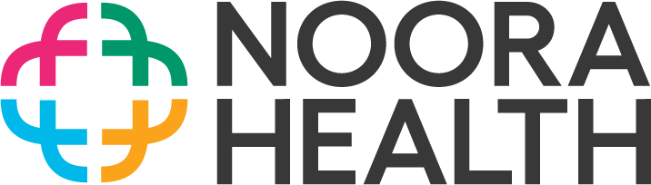
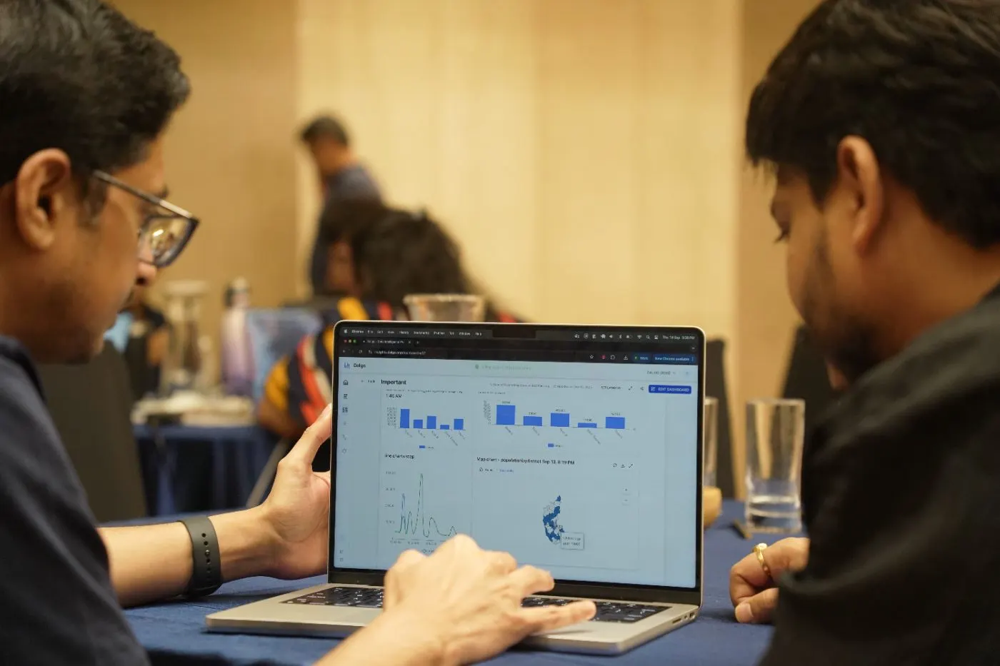
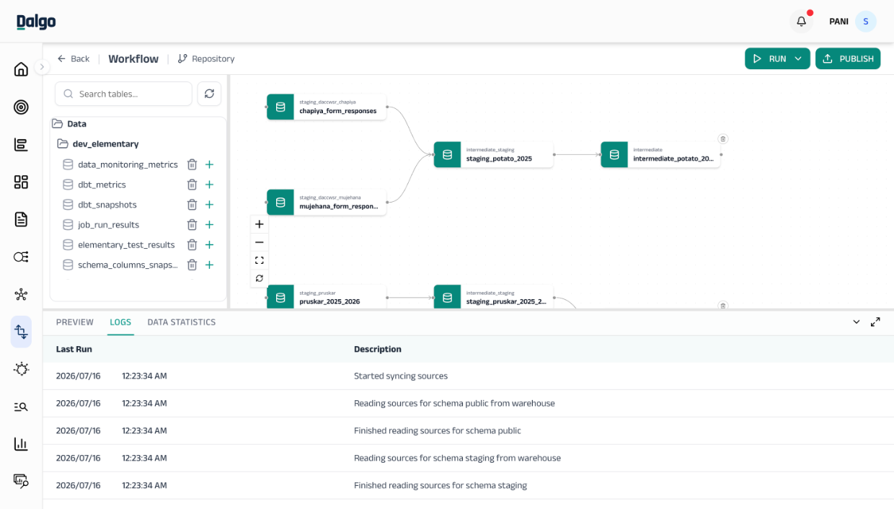
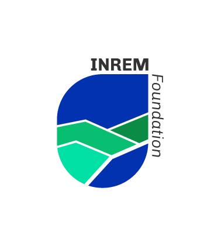

Noora Health
Equipping families with the skills to care for patients at the bedside.
We believe the social sector deserves better data systems — built with the same care as the missions they serve.

Click through Dalgo's real product screens — ingest, transform, and visualise — no signup needed.
Capabilities
One platform for everything — from data integration to data that speaks to your impact.
Your programs generate data in a dozen places — surveys, chatbots, spreadsheets, case-management tools. Dalgo consolidates all of it into a data warehouse that belongs to your organisation, cleaned and ready, so every review starts with numbers your team can trust.

Live dashboards
Real dashboards nonprofits run on Dalgo today — open them to see program data in action.

Equipping families with the skills to care for patients at the bedside.

Urban transformation across Kenya's informal settlements.

Safe drinking water and fluorosis mitigation.

Sanitation and health rights in India.
Scale your program without growing your data costs.
Be it 10 or 100 users — your price stays the same.
Annual support on Discord, with a community that has your back.
Expert help for your custom needs, priced for nonprofits.
Yes. Dalgo connects out of the box with more than 600 data sources, including KoboToolbox, Google Sheets, CommCare, Avni, Salesforce, Zoho, databases, and many other systems. There is no fixed limitation on what can connect to Dalgo. If a source is not already supported, we can build a connector for its custom API or other integration method, rather than forcing you to change the tools your teams rely on.
No. Dalgo's UI4T visual transformation interface lets teams clean, combine, and prepare data without writing SQL. SQL and dbt are available for more complex work, but they are not required for everyday dashboard use, reporting, or many common transformations.
Yes. Non-technical users can create and arrange charts into dashboards once the relevant datasets and definitions are available. Analysts and technical teams can handle more complex data modelling, while programme and M&E colleagues can use the platform to explore dashboards, create reports, apply filters, and work with agreed metrics.
Dalgo also provides a visual transformation interface for many common data-preparation tasks, alongside dbt-based workflows for more advanced needs.
Yes. Dalgo is built for the rhythm of MEL/M&E work—not just static dashboards. Teams can define and track KPIs tagged as input, outcome, and impact, organise them by programme, and slice them by time, geography, partner, cohort, or other relevant dimensions. This makes it easier to move from a high-level portfolio view to the programme-level detail behind a result.
Dashboards provide live views for ongoing monitoring. Reports create a fixed view for any chosen period—quarterly, annual, or otherwise—with executive summaries and comments that enable team-wide conversations on the same data. Alerts add a push mechanism: rather than expecting someone to remember to check a dashboard, Dalgo can notify the right people when a KPI moves into an agreed red or amber RAG status, or when a metric crosses a threshold.
Good AI starts with good data. Whether you are using NLP, LLMs, predictive analytics, or another AI approach, the underlying data needs to be centralised, reliable, tested, complete, and appropriately governed. That is the foundation Dalgo creates: a warehouse with shared definitions, automated transformations, quality checks, and controlled access.
Building on that foundation, Dalgo's roadmap includes Chat with Data/Dashboards for natural-language exploration of programme insights, automated qualitative analysis to help teams work with text-based information at scale, and Chat to Transform to make data transformation more accessible. These features are designed to support—not replace—human interpretation, programme expertise, and responsible data practice.
AI feature availability, data-sharing approach, model choices, and governance requirements are confirmed transparently for each organisation, particularly where data is sensitive.
Yes. Dalgo is designed to grow with more data sources, programmes, locations, users, and reporting needs. It runs on Kubernetes, which lets the platform scale infrastructure dynamically as workloads grow. There are no artificial limits on the number of users, pipelines, dashboards, charts, or other core platform assets you can create.
The SaaS price remains flat whether your organisation processes 1 GB or 500 GB of data a day, or has 5 users or 500. That makes it easier to expand data use across teams without being penalised for adoption. As you scale, we can also help strengthen the shared definitions, governance, and operating practices that keep the system maintainable.